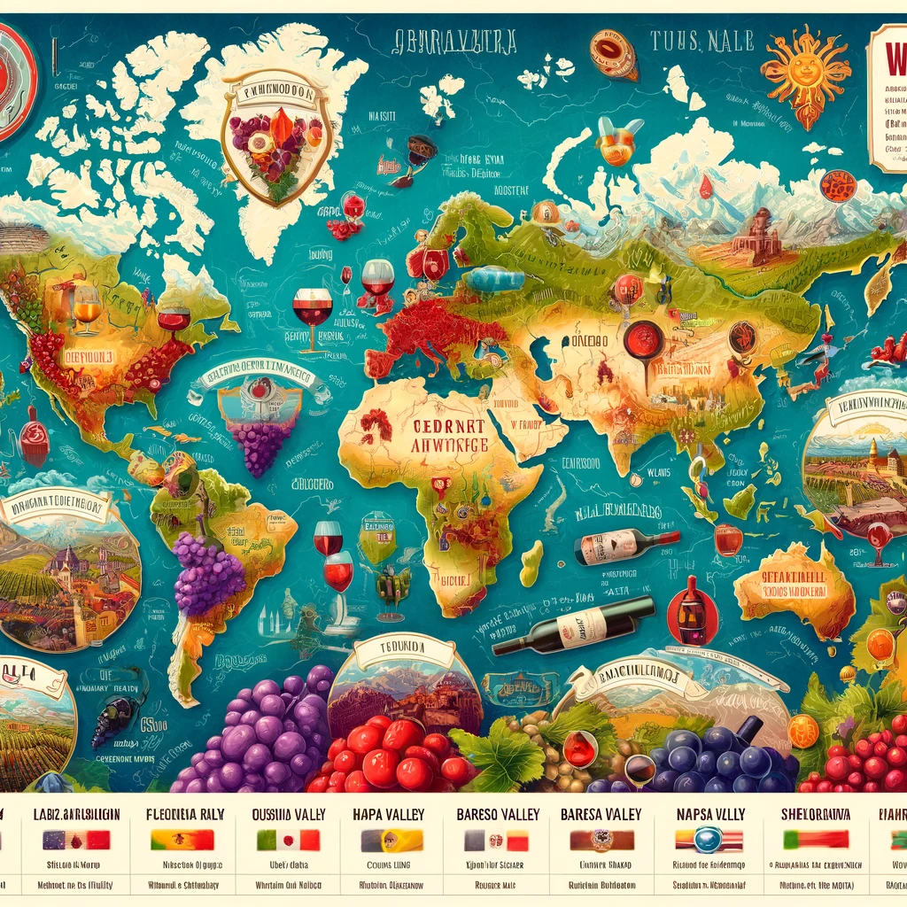

library(tidyverse)
library(caret)
library(rpart)
library(tidytext)
library(SnowballC)Predicting Wine Province Origin
R
Machine Learning
Random Forest
Classification
Our project sets a new bar in wine origin identification, transforming how industry professionals use critic data.

Purpose
The purpose of this project was to develop a predictive model for identifying the province of origin for wines based on descriptions provided by critics. To achieve this goal, a random forest model was built and evaluated for its performance, achieving a kappa score of 0.82. This project aimed to provide a useful tool for wine connoisseurs and industry professionals in identifying the origin of wines based on their sensory characteristics.
Setup
Feature Engineering
wine = read_rds("../../../Assets/Datasets/pinot.rds")
wine_words <- function(df, j, stem = T){
data(stop_words)
words <- df %>%
unnest_tokens(word, description) %>%
anti_join(stop_words) %>%
filter(str_detect(string = word, pattern = "[a-z+]")) %>% # get rid weird non alphas
filter(str_length(word) >= 3) %>% # get rid of strings shorter than 3 characters
filter(!(word %in% c("wine","pinot", "vineyard"))) %>%
group_by(word) %>%
mutate(total=n()) %>%
ungroup()
if(stem){
words <- words %>%
mutate(word = wordStem(word))
}
words <- words %>%
count(id, word) %>%
group_by(id) %>%
mutate(exists = (n>0)) %>%
ungroup %>%
group_by(word) %>%
mutate(total = sum(n)) %>%
filter(total > j) %>%
pivot_wider(id_cols = id,
names_from = word,
values_from = exists,
values_fill = list(exists=0)) %>%
right_join(select(df,id,province)) %>%
select(-id) %>%
mutate(across(-province, ~replace_na(.x, F)))
}
wino <- wine_words(wine, j = 190, stem = T)Joining with `by = join_by(word)`
Joining with `by = join_by(id)`Specification
set.seed(504)
ctrl <- trainControl(method = "cv", number = 3)
wine_index <- createDataPartition(wino$province, p = 0.80, list = FALSE)
train <- wino[ wine_index, ]
test <- wino[-wine_index, ]
fit <- train(province ~ .,
data = train,
method = "rf",
ntree = 100,
tuneLength = 15,
nodesize = 10,
verbose = TRUE,
trControl = ctrl,
metric = "Kappa")Model Performance
confusionMatrix(predict(fit, test),factor(test$province))Confusion Matrix and Statistics
Reference
Prediction Burgundy California Casablanca_Valley Marlborough New_York
Burgundy 216 5 0 0 1
California 13 758 14 23 19
Casablanca_Valley 0 0 10 0 0
Marlborough 0 0 0 12 0
New_York 0 0 0 0 0
Oregon 9 28 2 10 6
Reference
Prediction Oregon
Burgundy 10
California 62
Casablanca_Valley 0
Marlborough 0
New_York 0
Oregon 475
Overall Statistics
Accuracy : 0.8793
95% CI : (0.8627, 0.8945)
No Information Rate : 0.4728
P-Value [Acc > NIR] : < 2.2e-16
Kappa : 0.8069
Mcnemar's Test P-Value : NA
Statistics by Class:
Class: Burgundy Class: California Class: Casablanca_Valley
Sensitivity 0.9076 0.9583 0.384615
Specificity 0.9889 0.8515 1.000000
Pos Pred Value 0.9310 0.8526 1.000000
Neg Pred Value 0.9847 0.9579 0.990379
Prevalence 0.1423 0.4728 0.015541
Detection Rate 0.1291 0.4531 0.005977
Detection Prevalence 0.1387 0.5314 0.005977
Balanced Accuracy 0.9482 0.9049 0.692308
Class: Marlborough Class: New_York Class: Oregon
Sensitivity 0.266667 0.00000 0.8684
Specificity 1.000000 1.00000 0.9512
Pos Pred Value 1.000000 NaN 0.8962
Neg Pred Value 0.980132 0.98446 0.9370
Prevalence 0.026898 0.01554 0.3270
Detection Rate 0.007173 0.00000 0.2839
Detection Prevalence 0.007173 0.00000 0.3168
Balanced Accuracy 0.633333 0.50000 0.9098Re-fit and evaluation
set.seed(1504)
wine_index <- createDataPartition(wino$province, p = 0.80, list = FALSE)
train <- wino[ wine_index, ]
test <- wino[-wine_index, ]
# example spec for knn
fit_final <- train(province ~ .,
data = train,
method = "rf",
tuneGrid = fit$bestTune)
# The last line means we will fit a model using the best tune parameters your CV found above.Final Model Performance
confusionMatrix(predict(fit_final, test),factor(test$province))Confusion Matrix and Statistics
Reference
Prediction Burgundy California Casablanca_Valley Marlborough New_York
Burgundy 219 7 0 0 0
California 7 752 12 13 20
Casablanca_Valley 0 0 12 0 0
Marlborough 0 1 0 22 0
New_York 0 0 0 0 1
Oregon 12 31 2 10 5
Reference
Prediction Oregon
Burgundy 7
California 55
Casablanca_Valley 0
Marlborough 0
New_York 0
Oregon 485
Overall Statistics
Accuracy : 0.8912
95% CI : (0.8753, 0.9057)
No Information Rate : 0.4728
P-Value [Acc > NIR] : < 2.2e-16
Kappa : 0.8274
Mcnemar's Test P-Value : NA
Statistics by Class:
Class: Burgundy Class: California Class: Casablanca_Valley
Sensitivity 0.9202 0.9507 0.461538
Specificity 0.9902 0.8787 1.000000
Pos Pred Value 0.9399 0.8754 1.000000
Neg Pred Value 0.9868 0.9521 0.991571
Prevalence 0.1423 0.4728 0.015541
Detection Rate 0.1309 0.4495 0.007173
Detection Prevalence 0.1393 0.5134 0.007173
Balanced Accuracy 0.9552 0.9147 0.730769
Class: Marlborough Class: New_York Class: Oregon
Sensitivity 0.48889 0.0384615 0.8867
Specificity 0.99939 1.0000000 0.9467
Pos Pred Value 0.95652 1.0000000 0.8899
Neg Pred Value 0.98606 0.9850478 0.9450
Prevalence 0.02690 0.0155409 0.3270
Detection Rate 0.01315 0.0005977 0.2899
Detection Prevalence 0.01375 0.0005977 0.3258
Balanced Accuracy 0.74414 0.5192308 0.9167Conclusion
The kappa value of 0.82 for our random forest model signifies a high level of precision and accuracy, reflecting a very good agreement with the actual outcomes. This statistical measure, important for assessing classification model performance, confirms the model’s efficacy in predicting the correct class labels. Thus, with a kappa value of 0.82, the model demonstrates reliable predictive performance.